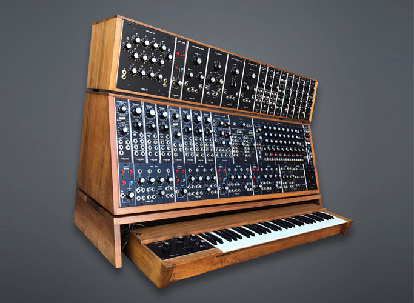
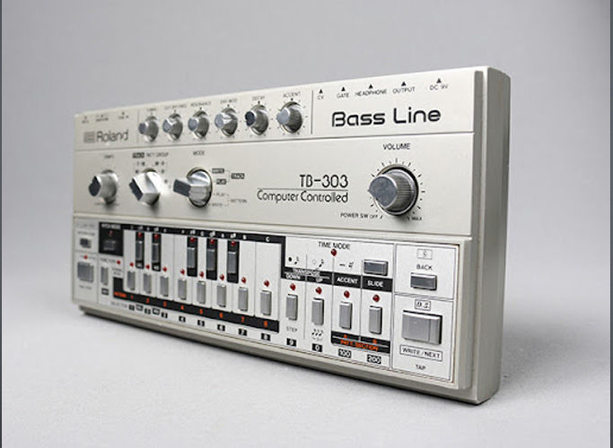

Moog System 55
The Moog synthesizer is a modular synthesizer developed by the American engineer Robert Moog. Moog debuted it in 1964, and Moog's company R. A. Moog Co. (later known as Moog Music) produced numerous models from 1965 to 1981, and again from 2014. It was the first commercial synthesizer, and is credited with creating the analog synthesizer as it is known today. (more)

Roland TB-303
The Roland TB-303 Bass Line (also known as 303) is a bass synthesizer released by Roland Corporation in 1981. It was originally designed to be used with the Roland TR-606 Drumatix, a programmable analog synthesis drum machine. Designed to simulate bass guitars, it was a commercial failure and was discontinued in 1984. However, cheap second-hand units were adopted by electronic musicians, and its "squelching" or "chirping" sound became a foundation of electronic dance music genres such as acid house, Chicago house and techno. It has inspired numerous clones. (more)